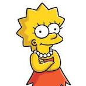

Simpsons Family

The cartoon "The Simpsons" is full of satire, ridicules American and not only American life and political
stereotypes
and ideas, the American way of life, various traditions of peoples and world cultures. A lot of time in
Simpson
is
devoted not only to ordinary Americans, but also to actors, stars and even politicians.
Simpsons Page
Homer Jay Simpson was born on May 12, 1956, to Abraham Simpson II and Mona Olsen.
Quotes
- - And how much will it cost?
- It's free!
- sounds expensive

Bartholomew JoJo "Bart" Simpson (born February 23 or April 1, 1980)[7]is the mischievous, rebellious,
misunderstood,
disruptive and "potentially dangerous" oldest child of the Simpson family in The Simpsons
Quotes
-
It's strange, it's locked here... As if they were already waiting for us.

Lisa Marie Simpson (born May 9, 1983)[9] is the elder daughter and middle child of the Simpson family and
one
of
the
two protagonists (along with Marge,) of The Simpsons series
Quotes
- Is it true that the proceeds will go to help children?
Yes, we are all someone's children...
Marge was created and designed by cartoonist Matt Greening while he was waiting in the lobby of James L. Brooks'
office. Greening had been called to pitch a series of shorts based on Life in Hell but instead decided to create
a new set of characters. He based the character on his mother Margaret Greening.
Quotes
- We will get rich and start a family.
“Homer, we already have a family!”
- Let's get better.